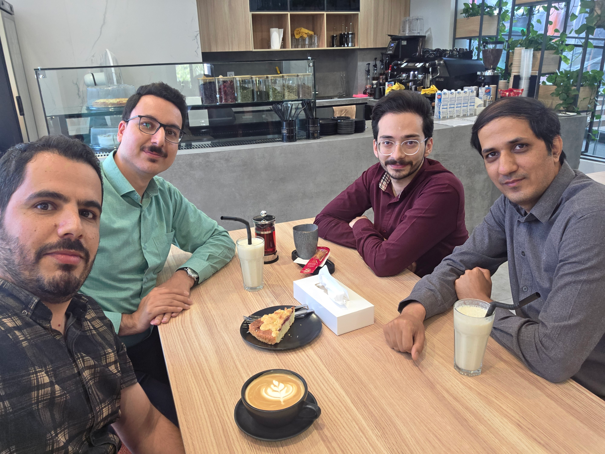

2013—14
PROJECT CONTROL
Mana Kian Saze Bakhtar
Project Control Expert · Construction
Planning · Primavera · Microsoft Project · ControlPRODUCT / PROCESS / DATA / AI
I turn complex business problems into clear products, better processes, and measurable outcomes.
A product professional with a foundation in data, operations and process improvement — now applying that perspective to financial services, product development and AI.
02 / CAREER ROADMAP
More than a list of titles: a progression from project control and performance management to data, process excellence, product leadership and AI-enabled product thinking.
Project Control Expert · Construction
Planning · Primavera · Microsoft Project · ControlPerformance Management → HR Planning
KPI / KR · Performance evaluation · Compensation analyticsSenior Data Analyst · Procurement & Finance
SQL · Power BI · Tableau · KPI design · Decision supportCost Controlling Supervisor
Forecasting · Cost control · Supplier negotiation · Stakeholder managementProcesses Development Lead | Product Manager
Internal products · B2B platform · Process digitization · Systems integrationSenior Product Analyst & Product Developer
Product analysis · Product development · Financial services · AI & automation exploration03 / SELECTED IMPACT
Selected outcomes from product, process, data and cost initiatives. Metrics are presented as business impact, not decoration.

DIGIKALA / BUSINESS ANALYSIS
This photo captures a business analysis session at Digikala — one of the many cross-functional conversations used to understand operational pain points, align stakeholders and turn business needs into product and process improvements.
I am a responsible, accountable and results-driven product professional with experience building internal products and B2B platforms in the technology industry. My earlier work in data analysis, BI, cost control and performance management shaped how I approach products: understand the process, quantify the problem, align people, then build what creates measurable value.
Today at Dotin, I work in product analysis and development in financial services, while deepening my focus on AI, automation and AI-enabled product experiences.
MASTER'S DEGREE · 2011—2013
Islamic Azad University, South Tehran Branch · Grade 18
Performance evaluation of production companies using data envelopment analysis and Monte Carlo simulation.
Efficiency analysis and optimization of a multi-product assembly line using simulation.
Additional research publications available through Civilica.
06 / WHAT'S NEXT
My current learning focus is practical AI for business and product: LLMs, RAG, agents, embeddings, AI workflows and the product decisions that turn these technologies into useful customer and operational experiences.
07 / GALLERY
Add future photos to assets/gallery/ and duplicate a gallery card in index.html.
YOUR NEXT
CHAPTER
08 / CONTACT